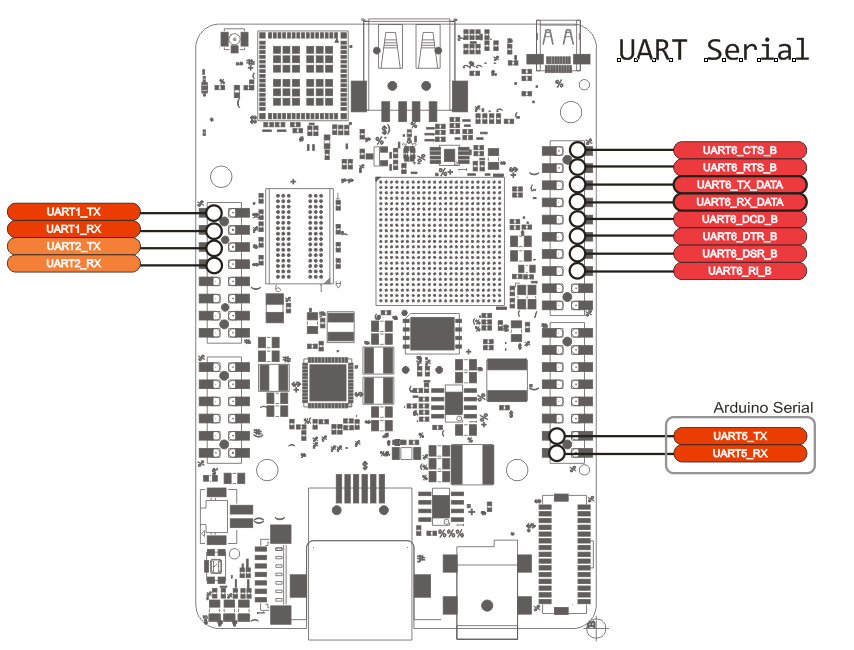

UART serial ports
Universal Asynchronous Receiver/Transmitter (UART) provides serial communication capability with external devices through a level converter and an RS-232 cable or through the use of external circuitry that converts infrared signals to electrical signals (for reception) or transforms electrical signals to signals that drive an infrared LED (for transmission) in order to provide low speed IrDA compatibility.
To see more detailed information look at the Chapter 65 on the iMX 6SoloX Reference Manual.
UDOO Neo UART ports
Table below gives a short description of the UART ports:
| Name | Function | Description |
|---|---|---|
| UART_1 | Cortex A9 serial debug | On this serial it's possible to have access to a Linux console |
| UART_2 | Cortex M4 MQX debug | Freescale MQX real-time OS library uses this serial for debug info |
| UART_3 | WL1831 Bluetooth chip | Used to communicate with Bluetooth chip mounted on the board |
| UART_4 | n.c. | n.a. |
| UART_5 | Arduino pin 0 /1 serial | It can be used by M4 microcontroller through the Serial0 object |
| UART_6 | Cortex A9 user serial | Not enabled by default. It can be enabled on external A9 pinout |
Debug UART ports
The serial debug ports (UART_1 and UART_2) are available on the external pinout. Signals can be accessed with a USB to TTL adapters.
UART 1
This UART is assigned to the A9 core as Debug Serial port. Over this serial it is possible to access a terminal console to login on a Linux shell. It can be accessed over the external pinout on the following pins:
| PCB NAME | SCHEMATICS SIGNAL NAME | SCHEMATIC IMX6 PAD NAME | REFERENCE MANUAL Pad Mux Register | ALTERNATE | |
|---|---|---|---|---|---|
| UART_1_TX | 47 | UART1_TXD | GPIO_4 | IOMUXC_SW_MUX_CTL_PAD_GPIO1_IO04 | ALT0 - UART1_TX_DATA |
| UART_1_RX | 46 | UART1_RXD | GPIO_5 | IOMUXC_SW_MUX_CTL_PAD_GPIO1_IO05 | ALT0 - UART1_RX_DATA |
Default configuration
- Baudrate: 115200
- Data: 8 bit
- Parity: none
- Stop: 1 bit
- Flow control: none
- Kernel device name: /dev/ttymxc0
UART 2
This serial is controlled by the M4 core. This core runs code based on MQX real time OS/libraries. These are a set of libraries developed by Freescale. They can exploit at best the M4 architecture, avoiding a raw port of Arduino libraries. The UART_2 port is used for debug purposes. It can be accessed over the external pinout on the following pins:
| PCB NAME | SCHEMATICS SIGNAL NAME | SCHEMATIC IMX6 PAD NAME | REFERENCE MANUAL PAD NAME | ALTERNATE | |
|---|---|---|---|---|---|
| UART_2_TX | 45 | UART2_TXD | GPIO_6 | IOMUXC_SW_MUX_CTL_PAD_GPIO1_IO06 | ALT0 - UART2_TX_DATA |
| UART_2_RX | 44 | UART2_RXD | GPIO_7 | IOMUXC_SW_MUX_CTL_PAD_GPIO1_IO07 | ALT0 - UART2_RX_DATA |
Default configuration
- Baudrate: 115200
- Data: 8 bit
- Parity: none
- Stop: 1 bit
- Flow control: none
- No kernel device (the kernel can't access this serial)
UART 3
This UART is connected to the Texas Instruments WL1831 chip for Bluetooh data communication purposes. It uses four signals at 1.8 Volts:
- RX
- TX
- CTS
- RTS
| PCB NAME | SCHEMATICS SIGNAL NAME | SCHEMATIC IMX6 PAD NAME | REFERENCE MANUAL PAD NAME | ALTERNATE | |
|---|---|---|---|---|---|
| UART_3_TX | - | BT_HCI_TX_1V8 | SD3_DAT4 | IOMUXC_SW_MUX_CTL_PAD_SD3_DATA4 | ALT3 - UART3_RX_DATA |
| UART_3_RX | - | BT_HCI_RX_1V8 | SD3_DAT5 | IOMUXC_SW_MUX_CTL_PAD_SD3_DATA5 | ALT3 - UART3_TX_DATA |
| UART_3_RTS | - | BT_HCI_RTS_1V8 | SD3_DAT6 | IOMUXC_SW_MUX_CTL_PAD_SD3_DATA6 | |
| UART_3_CTS | - | BT_HCI_CTS_1V8 | SD3_DAT7 | IOMUXC_SW_MUX_CTL_PAD_SD3_DATA7 |
* For these two signals the iMX 6Solox processor works in DCE mode.
UART 5
This is the serial controlled by the M4 core, available on the pins 0 and 1 on the external pinout. In the Arduino IDE you can access to this UART using the object Serial0.
Serial0.begin(115200); // Init the Serial at 115200 baudrate
Serial0.available(); // get the number of incoming bytes
Serial0.read(); // get the first byte in FIFO buffer
Serial0.write(); // write on output buffer byte array
Serial0.print(); // write on output buffer char array
Serial0.println(); // write on output buffer char array plus newline char
UART 6
This UART is user available, but it must be included in the device tree before the use. By default all of its pins are given to A9 in GPIO mode.
| PCB NAME | SCHEMATICS SIGNAL NAME | SCHEMATIC IMX6 PAD NAME | REFERENCE MANUAL PAD NAME | ALTERNATE | |
|---|---|---|---|---|---|
| UART_6_CTS_B | 33 | CSI0_DAT7 | CSI0_DAT7 | IOMUXC_SW_MUX_CTL_PAD_CSI_DATA07 | ALT4 - UART6_CTS_B |
| UART_6_RTS_B | 32 | CSI0_DAT6 | CSI0_DAT6 | IOMUXC_SW_MUX_CTL_PAD_CSI_DATA06 | ALT4 - UART6_RTS_B |
| UART_6_TX_DATA | 31 | CSI0_DAT5 | CSI0_DAT5 | IOMUXC_SW_MUX_CTL_PAD_CSI_DATA05 | ALT4 - UART6_TX_DATA |
| UART_6_RX_DATA | 30 | CSI0_DAT4 | CSI0_DAT4 | IOMUXC_SW_MUX_CTL_PAD_CSI_DATA04 | ALT4 - UART6_RX_DATA |
| UART_6_DCD_B | 29 | CSI0_DAT3 | CSI0_DAT3 | IOMUXC_SW_MUX_CTL_PAD_CSI_DATA03 | ALT4 - UART6_DCD_B |
| UART_6_DTR_B | 28 | CSI0_DAT2 | CSI0_DAT2 | IOMUXC_SW_MUX_CTL_PAD_CSI_DATA02 | ALT4 - UART6_DTR_B |
| UART_6_DSR_B | 27 | CSI0_DAT1 | CSI0_DAT1 | IOMUXC_SW_MUX_CTL_PAD_CSI_DATA01 | ALT4 - UART6_DSR_B |
| UART_6_RI_B | 26 | CSI0_DAT0 | CSI0_DAT0 | IOMUXC_SW_MUX_CTL_PAD_CSI_DATA00 | ALT4 - UART6_RI_B |